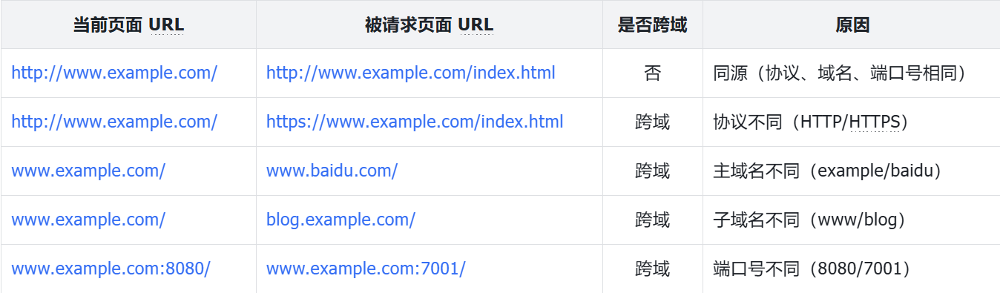
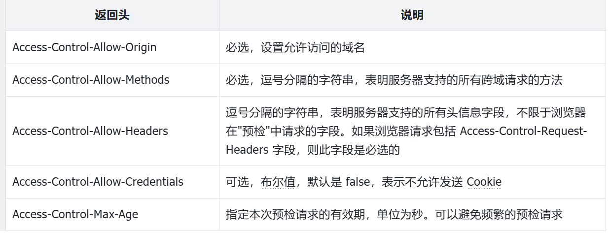

Web 服务核心功能：添加 Gin 中间件
Gin 框架也支持 Web 中间件，在 Gin 框架中，Web 中间件就叫中间件。本节课就来详细介绍如何实现并添加 Gin 中间件。
Gin 中间件介绍
Gin 支持三种中间件使用方式：
- **全局中间件：**全局中间件会作用于所有的路由。它们通常用于处理通用功能，比如请求日志记录、跨域设置、错误恢复；
- **路由组中间件：**路由组中间件仅对指定的路由组生效，适用于将某些逻辑限定在同一组相关的路由中。例如，所有/api 路径下的路由可能都需要一套特定的身份验证中间件；
- **单个路由中间件：**单个路由中间件仅对一个路由起作用。有时某个路由需要执行独立的中间件逻辑，这种情况下，可以将中间件绑定到单个路由上。
不同路由组的中间件设置方式不同。代码清单 8-4 展示了 Gin 中间件的开发和设置方法。
package main
import (
"log"
"net/http"
"github.com/gin-gonic/gin"
)
// 定义一个通用中间件：打印请求路径
func LogMiddleware() gin.HandlerFunc {
return func(c *gin.Context) {
log.Printf("Request path: %s\n", c.Request.URL.Path)
// 继续处理后续的中间件或路由
c.Next()
}
}
func main() {
r := gin.Default()
// 使用全局中间件：所有路由都会经过该中间件
// r.Use(gin.Logger(), gin.Recovery()) 同时设置多个 Gin 中间件
r.Use(LogMiddleware())
// 定义普通路由
r.GET("/", func(c *gin.Context) {
c.JSON(http.StatusOK, gin.H{"message": "Home"})
})
// 定义一个路由组，并为组添加中间件
apiGroup := r.Group("/api", LogMiddleware())
{
apiGroup.GET("/hello", func(c *gin.Context) {
c.JSON(http.StatusOK, gin.H{"message": "Hello, API"})
})
apiGroup.GET("/world", func(c *gin.Context) {
c.JSON(http.StatusOK, gin.H{"message": "World, API"})
})
}
// 为单个路由添加中间件
r.GET("/secure", LogMiddleware(), func(c *gin.Context) {
c.JSON(http.StatusOK, gin.H{"message": "This is a secure route"})
})
// 启动HTTP服务
r.Run(":8080") // 监听在8080端口
}
在代码清单 8-4 中，通过 r.Use()、r.Group()、r.Get() 方法分别设置了多个 Gin 中间件。在设置 Gin 中间件时，可以根据需要同时设置一个或者多个，例如 r.Use(gin.Logger(), gin.Recovery())，同时设置了两个 Gin 中间件。
在 LogMiddleware 中间件中，c.Next() 方法之前的代码将在请求到达处理器函数之前执行，而 c.Next() 方法之后的代码将在请求经过处理器函数处理之后执行。另外，在开发 Gin 中间件时，c.Abort() 方法也经常被开发者使用，该方法会直接终止请求的执行。
跨域功能实现
在前后端分离架构中，由于前后端域名不一致，会触发浏览器的同源策略限制，从而导致请求失败。因此，后端通常需要处理来自前端的跨域请求。下面将介绍后端服务如何实现跨域功能。
为什么会出现跨域
出现跨域问题的原因如下：
- 出于浏览器的同源策略限制：同源策略（Same-origin policy）是一种约定，是浏览器最核心且最基本的安全功能。如果没有同源策略，浏览器的正常功能可能会受到影响。同源策略是 Web 安全的基础，浏览器实现了这一机制。同源策略会阻止一个域的 JavaScript 脚本与另一个域的内容进行交互；
- 同源的定义：所谓同源是指两个页面具有相同的协议（protocol）、主机（host）和端口号（port）；
- 非同源限制：
- 无法读取非同源网页的 Cookie、LocalStorage 和 IndexedDB；
- 无法访问非同源网页的 DOM；
- 无法向非同源地址发送 AJAX 请求。
简单来说，当一个资源访问另一个不同源的资源时，就会发出跨域请求。如果目标资源未允许跨域访问，则请求的资源将会遇到跨域问题。
使用跨域资源共享（CORS）来跨域
解决跨域问题的方法有多种，例如 CORS、Nginx 反向代理、JSONP 跨域等。在 Go 后端服务开发中，通常使用 CORS 来解决跨域问题。
CORS 是一个 W3C 标准，全称为“跨域资源共享”（Cross-Origin Resource Sharing）。它允许浏览器向跨域服务器发出 AJAX 请求，从而克服了 AJAX 只能在同源环境中使用的限制。例如，当请求 URL 的协议、域名或端口三者中任意一个与当前页面的 URL 不同，即可认为是跨域情况。表 8-1 是具体案例。
表 8-1 跨域案例

在使用 CORS 时，HTTP 请求被划分为两类：简单请求和复杂请求。这两种请求的区别主要在于是否会触发 CORS 的预检请求。具体定义如下：
- **简单请求：**请求方法为 GET、HEAD 或 POST，且 HTTP 请求头中仅包含以下六种字段之一：Accept、Accept-Language、Content-Language、Last-Event-ID、Content-Type。其中，Content-Type 的值只能是以下三种之一：application/x-www-form-urlencoded、multipart/form-data 或 text/plain。简单请求在发送时会自动在 HTTP 请求头中添加 Origin 字段，用于标明当前来源（协议、域名和端口），然后由服务端决定是否放行请求；
- **复杂请求：**凡是不符合简单请求定义的请求，均为复杂请求。
CORS 需要浏览器和服务器的共同支持。目前，所有主流浏览器已支持该功能。当浏览器检测到 AJAX 请求跨源时，会自动附加一些头信息。如果是复杂请求，还会添加一次预检请求。不过这些过程对用户而言是透明的。由此可见，实现 CORS 通信的关键在于服务端。只需服务器实现 CORS 接口（在 HTTP 响应头中设置：Access-Control-Allow-Origin），即可完成跨源通信。
简单请求的 CORS 跨域处理
对于简单请求，浏览器会直接发出 CORS 请求。具体而言，会在请求头信息中增加一个 Origin 字段：
origin: https://wetv.vip
服务器需要处理该头部，并在返回头中填充 Access-Control-Allow-Origin 字段：
access-control-allow-origin: https://wetv.vip
该头部也可以填写为“*”，表示接受任意域名的请求。如果未返回该头部，浏览器将抛出跨域错误。
复杂请求的 CORS 跨域处理
复杂请求的 CORS 请求会在正式通信之前增加一次 HTTP 查询请求，称为“预检”请求（preflight）。“预检”请求使用的 HTTP 方法是 OPTIONS，表示该请求用于询问目标资源是否允许跨域访问。
当后端收到预检请求后，可以通过设置跨域相关的 HTTP 头部以完成跨域请求。支持的头部字段具体如表 8-2 所示。

预检通过后，浏览器就正常发起请求和响应，流程和简单请求一致。
miniblog 跨域功能实现
由于 miniblog 的请求均为复杂请求，因此这里只需处理复杂请求的跨域问题。跨域相关的 HTTP 头设置，通过中间件实现，miniblog 的实现见 Cors 中间件，代码如下：
// Cors是一个 Gin 中间件，用于处理 CORS 请求.
func Cors(c *gin.Context) {
// 处理预检请求
if c.Request.Method == http.MethodOptions {
c.Header("Access-Control-Allow-Origin", "*")
c.Header("Access-Control-Allow-Methods", "GET, POST, PUT, PATCH, DELETE, OPTIONS")
c.Header("Access-Control-Allow-Headers", "authorization, origin, content-type, accept")
c.Header("Allow", "HEAD, GET, POST, PUT, PATCH, DELETE, OPTIONS")
c.Header("Content-Type", "application/json")
c.AbortWithStatus(http.StatusOK)
return
}
c.Next() // 继续处理请求
}
如果 HTTP 请求不是 OPTIONS 类型的跨域请求，则正常处理该 HTTP 请求。如果 HTTP 请求是 OPTIONS 类型的跨域请求，则通过设置跨域相关的 HTTP 头部信息来允许跨域访问，并直接返回响应而不再进入后续处理流程。
miniblog Gin 中间件添加
在 internal/pkg/middleware/gin/ 目录下新建 requestid.go 和 header.go 文件。requestid.go 文件中实现了 Gin 请求 ID 中间件。header.go 文件中实现了跨域中间件。请求 ID 中间件代码如代码清单 8-5 所示。
代码清单 8-5 Gin 请求 ID 中间件实现
// RequestIDMiddleware 是一个 Gin 中间件，用于在每个 HTTP 请求的上下文和
// 响应中注入 `x-request-id` 键值对.
func RequestIDMiddleware() gin.HandlerFunc {
return func(c *gin.Context) {
// 从请求头中获取 `x-request-id`，如果不存在则生成新的 UUID
requestID := c.Request.Header.Get(known.XRequestID)
if requestID == "" {
requestID = uuid.New().String()
}
// 将 RequestID 保存到 context.Context 中，以便后续程序使用
ctx := contextx.WithRequestID(c.Request.Context(), requestID)
c.Request = c.Request.WithContext(ctx)
// 将 RequestID 保存到 HTTP 返回头中，Header 的键为 `x-request-id`
c.Writer.Header().Set(known.XRequestID, requestID)
// 继续处理请求
c.Next()
}
}
在代码清单 8-5 中，首先尝试从请求头中获取请求 ID，如果找到则使用该 ID。如果未找到，则生成一个新的 UUID 作为请求 ID。随后，将请求 ID 添加到自定义上下文和 HTTP 响应头中。
修改 internal/apiserver/httpserver.go 源码文件，在其中添加 Gin 中间件，代码变更如下：
package apiserver
import (
...
mw "github.com/onexstack/miniblog/internal/pkg/middleware/gin"
...
)
...
// NewGinServer 初始化一个新的 Gin 服务器实例.
func (c *ServerConfig) NewGinServer() server.Server {
// 创建 Gin 引擎
engine := gin.New()
// 注册全局中间件，用于恢复 panic、设置 HTTP 头、添加请求 ID 等
engine.Use(gin.Recovery(), mw.NoCache, mw.Cors, mw.Secure, mw.RequestIDMiddleware())
...
return &ginServer{srv: httpsrv}
}
测试 Gin 中间件
运行以下命令编译并启动 mb-apiserver：
$ make
$ _output/mb-apiserver # 需修改 $HOME/.miniblog/mb-apiserver.yaml文件中server-mode为gin
打开一个新的 Linux 终端，请求健康检查接口：
$ curl -v http://127.0.0.1:5555/healthz
...
< Access-Control-Allow-Origin: *
...
< X-Request-Id: 5607b8d5-0b5f-4bb8-b2cb-4c853a68ebb5
...
* Connection #0 to host 127.0.0.1 left intact
{"timestamp":"2025-02-01 14:56:09"}
可以看到 HTTP 返回头中，成功返回了 X-Request-Id 和 Access-Control-Allow-Origin 返回头。